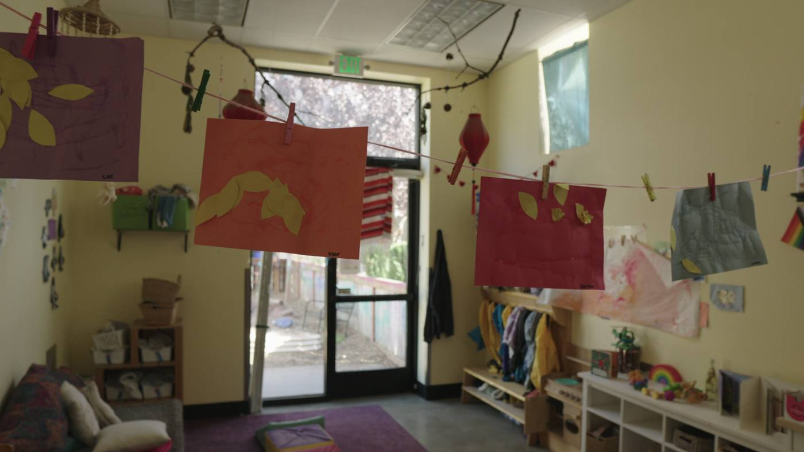
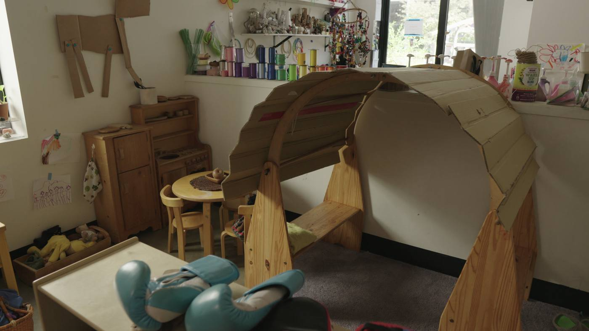
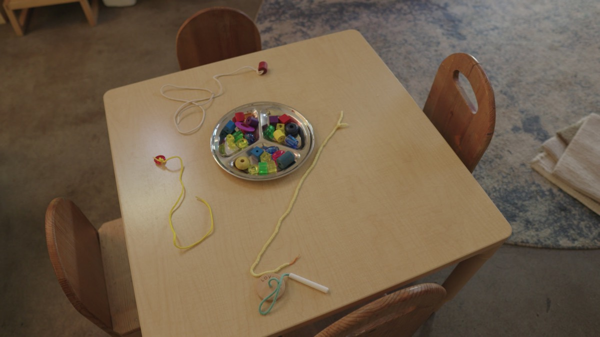
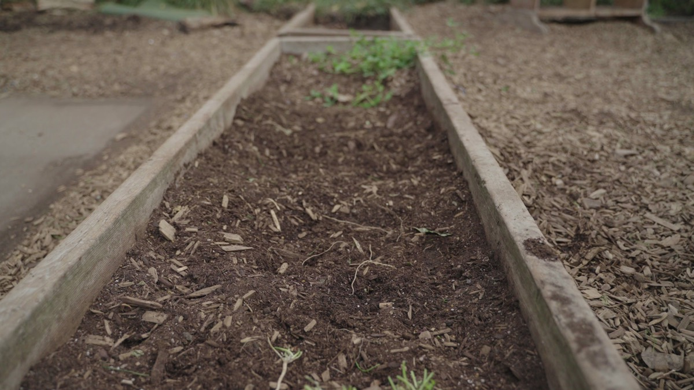

A year of content for Wow and Flutterville Playgardens
This page walks through the year we proposed, starting with the footage we filmed at your Northeast garden in October. It's laid out so you and your family can read it together. Tick what fits, and your plan comes with you to the call.

Launch clips from October 18
We spent a day at the Northeast garden in October, and that footage is ready to work. The tour confirmation pieces for all three gardens are already cut, and the rest of the day gives us the first nine clips for December, before the first shoot day of the year.
- Tour confirmation, NortheastCut
- Tour confirmation, SoutheastCut
- Tour confirmation, NorthwestCut

Garden films
Families pick a garden as much as a school, so each one gets its own short film, with its director on camera and the rooms and yard at their best. A homepage film ties the three together, and a first-tour film shows a new family what their visit looks like. Parents and directors speak for themselves in short testimonials.
- Northeast, 4114 N Vancouver AveMs. Brittney
- Southeast, 8722 SE 17th AveMs. Raghad
- Northwest, 800 NW 107th AveMs. Antonette

Year-round content retainer
The year holds 36 short vertical clips. Half show how the school works: a day at each garden, Reggio and Waldorf in practice, the babies room, the garden beds, ERDC and PFA explained. The other half are saved for your events, so each open house and celebration gets its own moment.
- Two shoot daysWinter and summer, all three gardens
- Pickups for the big daysOne person, one camera
- A one-page brief for your directorsSo a snow day can still make the feed

Photo galleries and the parent pack
A photographer works both shoot days, so each garden gets a gallery of stills sized for the web and for print. The same pictures fill an eight page parent pack and a one page tour leave-behind for each garden, ready for open houses and tours.

Teacher hiring film
Teachers pick a school the way families do, by seeing the rooms and meeting the director. A short film of your gardens and directors, cut for job posts and a careers page, gives each garden more to show a candidate than a listing does. We can film it on the same shoot days.

Social media management
Our social manager posts three times a month on Instagram and Facebook in the school's voice, and answers comments and messages within a business day. Once a month you get one page on what went out and what moved, and you approve the calendar once a quarter.
- @wowandfluttervillespdxInstagram and Facebook

A website in your name
Today your site, forms and parent leads run on your current agency's platform, so they change hands when that contract ends. We'd move you to a site on an account you own, with a page for each garden carrying its film, the parent pack and a tour button. Your daughter can build it from our page plan, or we build it.
- The phone number in the headerFixed on the new site
- A reviews page with real families on itFixed on the new site
- An open house banner that matches the calendarFixed on the new site

Local search and reviews
Families compare gardens on Google before they book a tour. We give your three listings one category and keep them fresh with photos and posts. A short note after a tour or a moving-up day asks families for a review.
Talk it through
Cody McDonald, Portland Content
cody@portlandcontent.com or (503) 568-1199
Nothing goes dark in December
The year is built so the switch is invisible to families. In November we plan the pages and cut the first clips from October's footage. In December the new site goes live with your films, the old links point to it, and posting continues on schedule. January brings the first shoot day of the year.
- NovemberPlan and first clips
- DecemberSite live and posting
- JanuaryWinter shoot
- JuneSummer shoot
- FallFilms live for enrollment